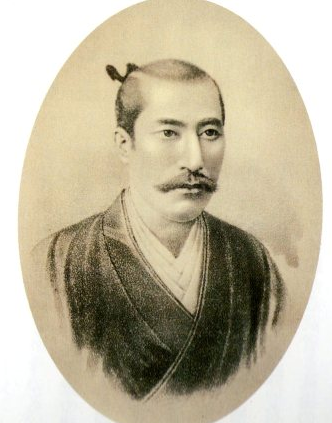

제육천마왕(第六天魔王 だいろくてんまおう).
일본 전국시대의 다이묘(大名). 한 줄 분량으로 설명하자면 일본 전국시대 종식의 기반을 닦은 사람으로 근세 이후의 일본 역사에 큰 영향을 끼친 인물이다. 일본 전국시대를 논할 때 좋든 싫든 이 사람을 빼고 이 시대를 논하는 것은 불가능할 정도.
일본에서 인기가 많은 인물로, 조사마다 차이는 있겠지만 2006년 한 조사에선 사카모토 료마를 제치고 일본인이 가장 존경하는 인물 1위를 차지하기도 했다. 후술되어있지만 여러 평을 받는 인물로 토사구팽에 잔혹한 일면도 있지만 시대를 앞선 전략과 정책으로 적들을 격퇴해 사실상 전국시대 통일을 가장 먼저 이룬 인물로도 꼽힌다.
